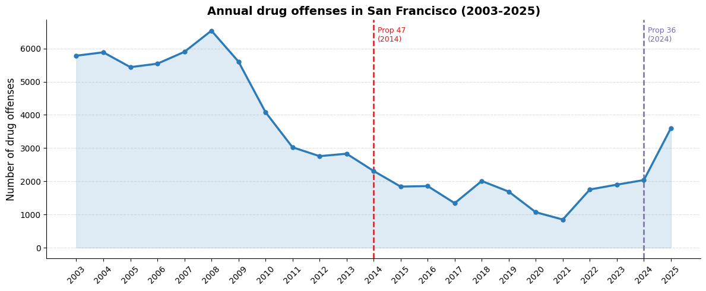

Background
The record overdose toll is part of a devastating trend of an expanding fentanyl and methamphetamine market and a worsening addiction epidemic in the State of California, particularly in San Francisco.
Two ballot propositions have shaped how the city handles drug offenses over the past decade:
Reclassified simple drug possession from a felony to a misdemeanor, significantly reducing criminal penalties for non-violent drug offenses [2].
Partially reversed Prop 47 — fentanyl and methamphetamine possession can again be charged as a treatment-mandated felony [4].
This article dives into police record data, to uncover the story behind the tragic numbers.
The following analysis is carried out on data from police reports from San Francisco City and County departments, covering reports from 2003 to the present — a combination of historical and recent incident data [5, 6].
Part 1 · Geography
The Tenderloin neighborhood, located in downtown San Francisco, is known for high levels of homelessness and poverty [7]. The area is closely associated with the city's opioid crisis, because of widespread drug use and obvious open-air drug markets. These conditions have led Tenderloin to receive significant media coverage, where videos of public drug use are shared with captions such as "zombie apocalypse" [8, 9].
Looking at map (a) in Figure 1, there is a clear geographic concentration of drug offenses in and around the Tenderloin neighborhood. When focusing specifically on heroin-related offenses — including fentanyl and methamphetamine — the concentration in Tenderloin becomes even more distinct, making it clear that Tenderloin is the geographical center of San Francisco's opioid crisis [10].
Figure 1: Dual map showing the concentration of drug crimes in San Francisco. The blue pin marks the Tenderloin district. Map (a) shows all drug-related offenses; map (b) shows heroin-specific crimes.
Part 2 · Trends over time
To understand the current crisis, it's important to look at how drug-related offenses have evolved over time. Figure 2 shows the annual count of drug offenses in San Francisco from 2003 to 2025.
After Proposition 47 passed in 2014 [2], reported drug offenses fell sharply — not because drug use decreased, but because police had less reason to file reports for what was now a minor offense. Meanwhile, overdose deaths kept rising, reaching a record 806 in 2023 [1]. This disconnect between falling arrest numbers and a worsening public health crisis highlights a key limitation of using police data alone to measure the scale of the drug epidemic.
The sharp spike in 2025 following Proposition 36 [4] suggests that enforcement is ramping back up — with fentanyl and methamphetamine possession now chargeable as a felony again, police are once again filing more reports. Whether this translates into a real reduction in drug activity remains to be seen (note: 2026 is excluded from the figure as the year is incomplete and would artificially deflate the count).

Figure 2: Annual count of drug offenses in San Francisco from 2003 to 2025. Dashed red line marks Proposition 47 (2014); dashed purple line marks Proposition 36 (2024).
Part 3 · Policy shift
At first glance, the 2025 rebound seems straightforward, drug incidents went up again. But totals only tell part of the story. To understand what really changed, we need to look inside that increase.
In 2024, sales and distribution made up the largest share of recorded drug incidents, accounting for 41.6% of the total, while possession was a smaller category at 27.6%. If we stopped there, it would be easy to assume that sales-related enforcement was still driving the city’s drug-incident profile. But one year later, that picture looks completely different.
From 2024 to 2025, total incidents rise by 2,551. Yet the rebound is not spread evenly across all subtypes. Most of it comes from one place: possession and paraphernalia, which alone increase by 2,070 incidents. At the same time, sales and distribution actually fall by 448. The balance of enforcement shifts sharply. Possession grows to 48.0% of all drug incidents in 2025, while sales drops to 19.1%.
One likely explanation is the passage of Proposition 36 in 2024, which partially reversed Proposition 47 and made certain possession offenses, including fentanyl and methamphetamine possession, chargeable again under harsher penalties and treatment-mandated felony provisions [2][4]. That policy change helps explain why the rebound is concentrated in low-level possession-related incidents rather than in sales and distribution.
This matters because it changes how we should read the rebound. This is not simply a story of “more drug incidents” across the board. It is a story of a different enforcement pattern taking shape after the policy change. What returns in 2025 is not broad growth in every category, but a strong rise in low-level possession-related reporting.
Figure 3 makes that shift visible from two angles at once, counts and shares. Reading both together helps avoid a misleading one-number interpretation. The broader lesson is that policy does not just shape the law on paper. It also shapes what gets recorded in police data and that, in turn, shapes the story the data appears to tell.
Figure 3: Decomposition of the 2024 to 2025 shift in drug incidents. First panel shows net count change by subtype. Second panel shows share change between the years.
Social Data Analysis 2026 · Assignment 2 · DTU
| Name & Student No. | Contributions |
|---|---|
|
Marah Marak
S182946
|
Website & Part 2 |
|
Sara Sterlie
S204674
|
Intro & Part 1 |
|
Thorsteinn Hoskuldsson
S253555
|
Part 3 |